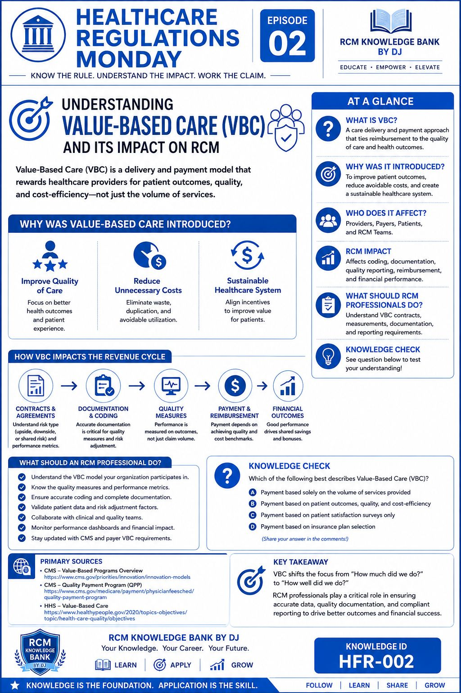
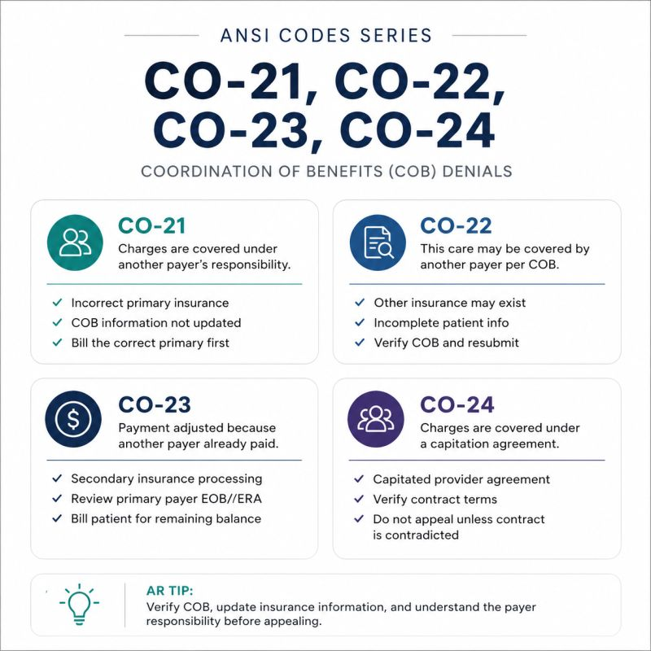

LinkedIn · Published series
Explore the learning series
Only the Monday, Tuesday, and Wednesday series are shown as published here. Other weekday series will appear when their content is ready and reviewed.

Monday · Healthcare RegulationsSource-aware learning about healthcare rules and their RCM implications. Tuesday · A Smile on Every ClaimDental and CMS-1500 learning, connecting the form to the story behind the claim.
Tuesday · A Smile on Every ClaimDental and CMS-1500 learning, connecting the form to the story behind the claim.
Wednesday · ANSI CARC CodesUnderstand claim adjustment reason codes and the next operational question.Quality before quantity
Thursday through Sunday and the general archive are being prepared. We will publish them here after review instead of displaying placeholder or sample posts as if they were ready.